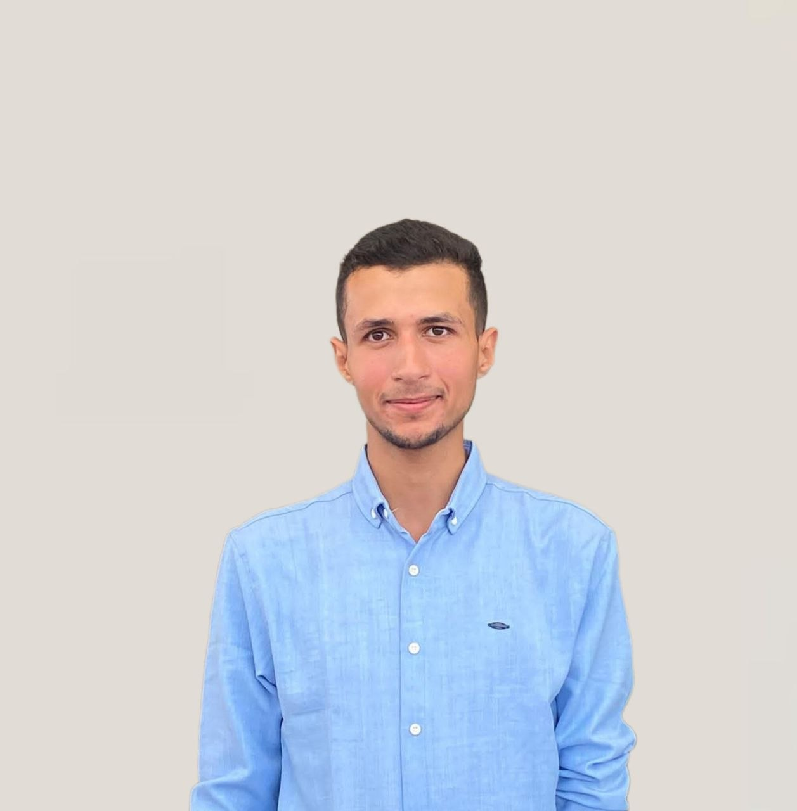
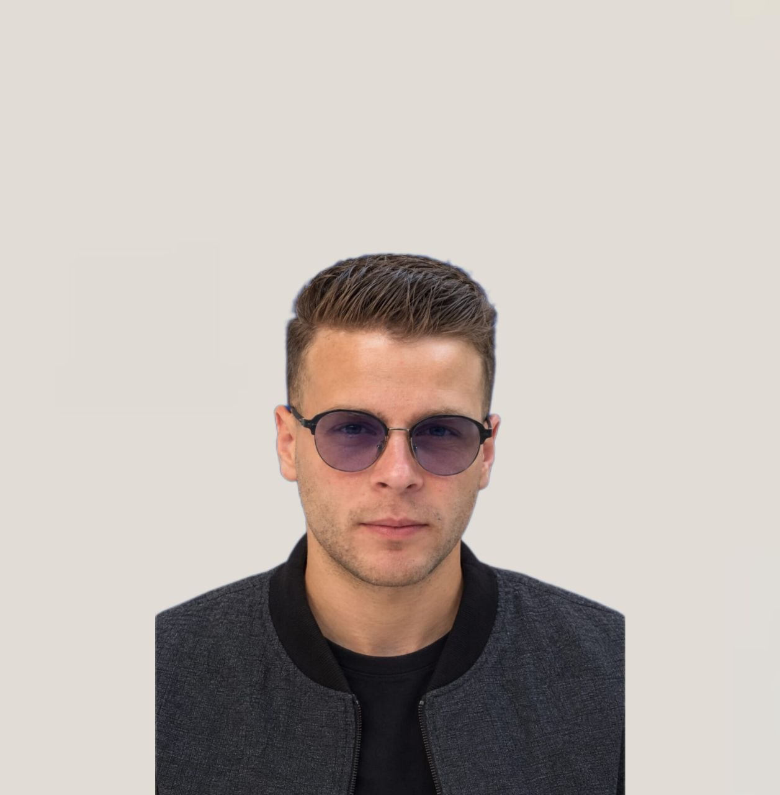
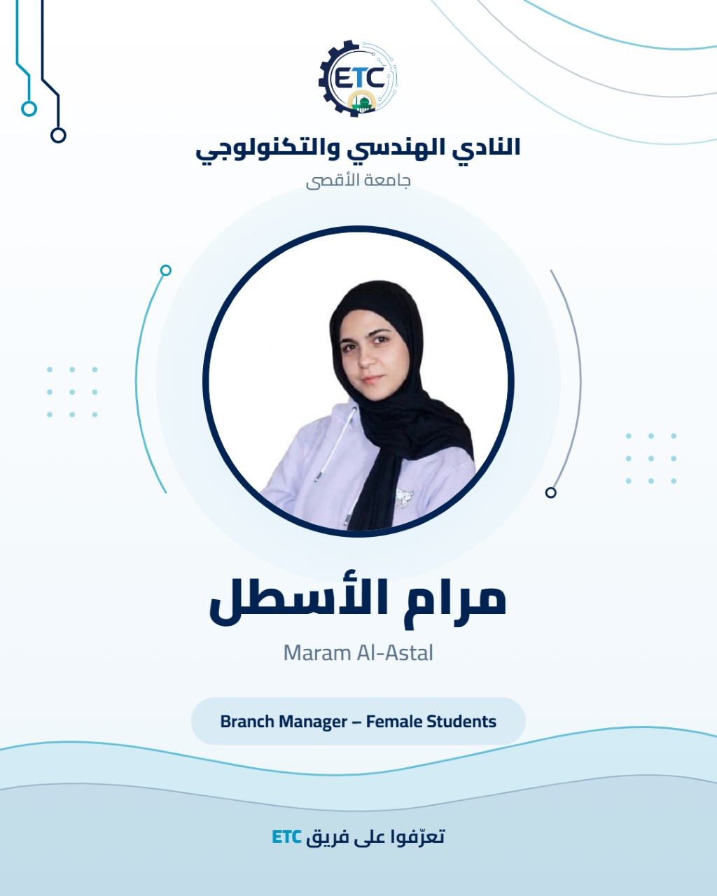
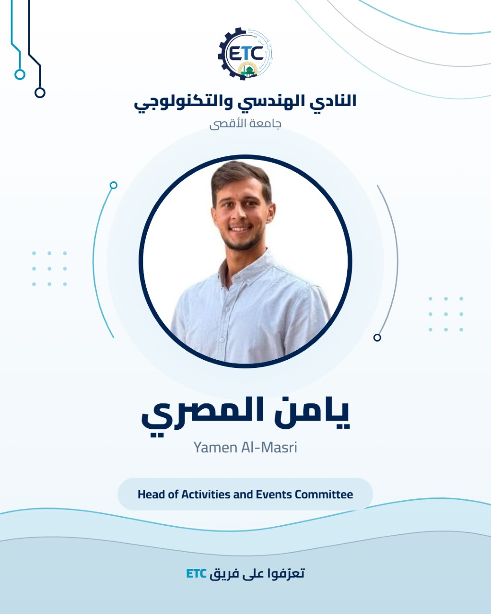
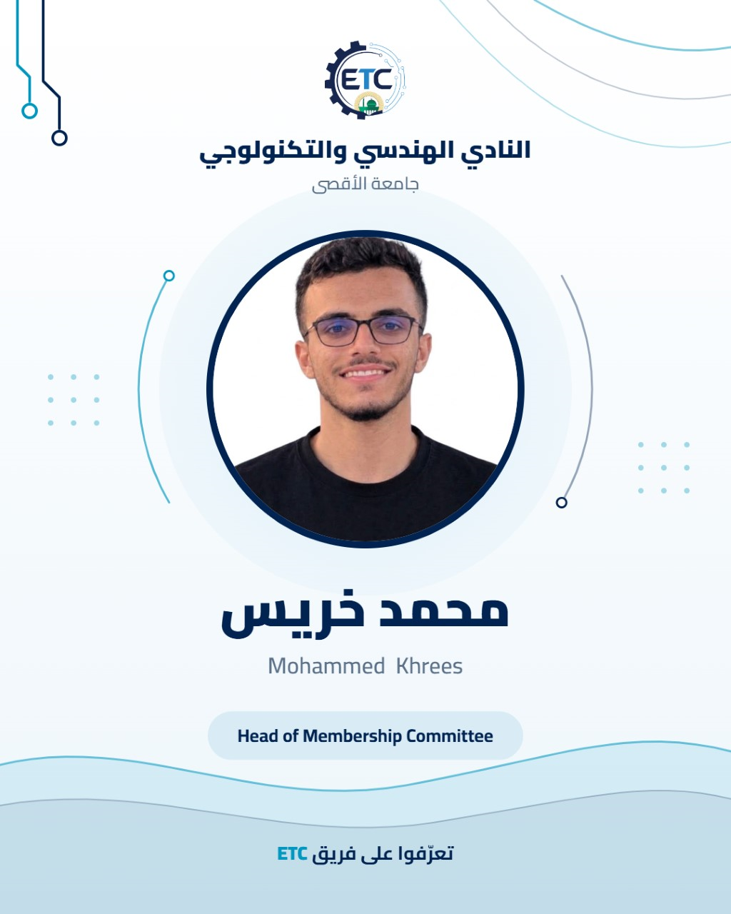

النادي الهندسي
والتكنولوجي
Engineering & Technology Club (ETC)
جامعة الأقصى – غزة، فلسطين
من نحن
نادٍ طلابي تأسس عام ٢٠٢٦ في جامعة الأقصى، هدفه تنمية مهارات طلبة الهندسة والتكنولوجيا وربطهم بالخبرات المهنية وسوق العمل.
أهداف النادي
إتاحة الفرص
إبراز مهارات الطلبة وأعمالهم أمام المجتمع وسوق العمل
للطالب بشكل خاص
تقديم ورش ودورات عملية تلبي احتياجات الطلبة
للجميع
بناء مجتمع طلابي منظم يمارس القيادة والعمل الجماعي
العلاقات
بناء شراكات مع الشركات والمهندسين تخدم الطلبة
ماذا نقدم للطالب؟

ورش وكورسات :
تدريب عملي في المجالات التقنية والهندسية
فعاليات ومسابقات:
لقاءات وأنشطة تطبق ما يتعلمه الطالب
مجتمع وقيادة:
بيئة لبناء المهارات والعلاقات وتجربة القيادة
شراكات:
تعاون مع شركات ومهندسين من داخل غزة وخارجها
تدريب وتوظيف:
فرص ميدانية ومهنية عبر الشراكات
شهادات رسمية:
شهادات حضور ومشاركة باسم النادي
الهيئة الإدارية




مديرو الفروع واللجان





قيم النادي الهندسي ومبادئه
نلتزم في عملنا بمجموعة من القيم والمبادئ الأساسية التي تحكم مسيرتنا، حيث نضع مصلحة الطلبة أولاً كهدف نسعى لتحقيقه دائماً من خلال تقديم خدمات ذات مهنية وواضحة. ونؤمن بأن تحقيق ذلك يتطلب الالتزام الصارم بالمواعيد والوعود (المهنية والاحترام)، مع ضمان تكافؤ الفرص والعدالة بين جميع الطلاب والطالبات. ونعزز في بيئة عملنا مبدأ الشفافية من خلال توثيق كل مراسلة وموافقة، إضافة إلى صون الاستقلالية التي تضمن حرية القرار والنزاهة في الهوية بعيداً عن أي تأثيرات."
طريقة الانتساب للنادي
سيكون هناك رابط سنطلقه على جميع مواقعنا بالتواصل الاجتماعي سيكون فورم للانتساب في النادي وسيتم إضافة الطالب على قروب الواتس المخصص للنادي وهناك سنعلن عن ورشاتنا وفعالياتنا ومسابقات النادي
حاليا الانتساب سيكون لطلاب كلية الهندسة وطلاب كلية الحاسبات وبعدها سنفتح باب الانضمام لجميع الكليات باذن الله
حاليا الانتساب سيكون لطلاب كلية الهندسة وطلاب كلية الحاسبات وبعدها سنفتح باب الانضمام لجميع الكليات باذن الله
ترقبوا مفاجآتنا القادمة! انتسبوا للنادي لتكونوا أول من يعرف....
وكونوا جزءاً من الرحلة التي تبدأ من اليوم.
وكونوا جزءاً من الرحلة التي تبدأ من اليوم.